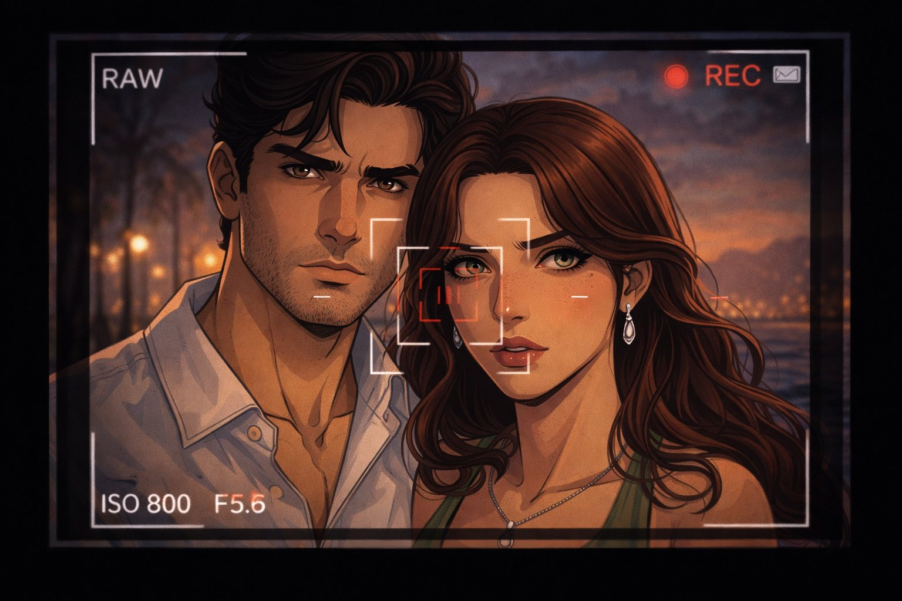

Capitolo 6: Il Concorso e il Cuore di Don Salvatore
Il concorso e l’ombra di Don Salvatore alzano la posta, tra ambizione, minaccia e promesse di salvezza.

L'evento si svolgeva in una lussuosa villa affacciata sul mare, illuminata da candelabri dorati. Nobili, artisti e — si intuiva — uomini d'onore della malavita, applaudivano educatamente sul terrazzo dove si teneva il concorso. Laura, con un vestito nero elegante, conversava con Don Salvatore, sorseggiando un bicchiere di vino.
"Devo distrarlo", pensava, mentre gli parlava di musica classica con un sorriso forzato.
Alessio, fingendo interesse per i quadri alle pareti, esplorava la sala con lo sguardo. E poi lo vide: in una teca di vetro illuminata, il violino d'oro luccicava come un tesoro proibito. Il cuore gli batté forte. Ma intorno, telecamere e guardie armate rendevano impossibile un furto ora.
Intanto, sul palco, Maria iniziava a suonare. Don Salvatore, seduto in prima fila, la fissava con occhi che tradiscono più dell’ammirazione. Quando le note di "Ciuri ciuri", una malinconica canzone siciliana, risuonarono, l’uomo si portò una mano al cuore.
"Si è innamorato di lei", capì Laura, con un misto di sollievo e amarezza.
Dopo l’esibizione
Don Salvatore chiamò in disparte Laura e Alessio.
— Maria è straordinaria — disse, accarezzandosi l’anello con lo stemma di famiglia. — Voglio un’esibizione privata. Stasera stessa, nella mia suite.
Alessio serrò i denti. — Assolutamente no.
Laura lo afferrò per un braccio. — "È la nostra occasione", sussurrò. Poi, a Salvatore: — Certamente. Ma solo se io e mio marito possiamo assistere.
L’uomo annuì, soddisfatto. — Alle 23. Non fatele mancare nulla.
Fuori, nel giardino
Maria sistemava il violino nella custodia. Laura le si avvicinò.
— Sei stata bravissima — le disse, con una voce che voleva essere dolce ma tremava leggermente.
Alessio osservava Maria, sentendo una gelosia acida salirgli in gola. "Perché? Non è mia. Eppure..."
Maria incrociò il suo sguardo e capì tutto. Abbassò gli occhi. — Non rovinare ciò che hai per un capriccio — mormorò, prima di allontanarsi.
Laura vide quell’intesa silenziosa e il suo cuore si spezzò in due.
Quella sera, nella loro stanza
Laura fissava il mare dalla finestra. Alessio le si avvicinò.
— Dobbiamo parlare — iniziò.
Ma lei scosse la testa. — Non ora. Dopo... dopo che avremo il violino.